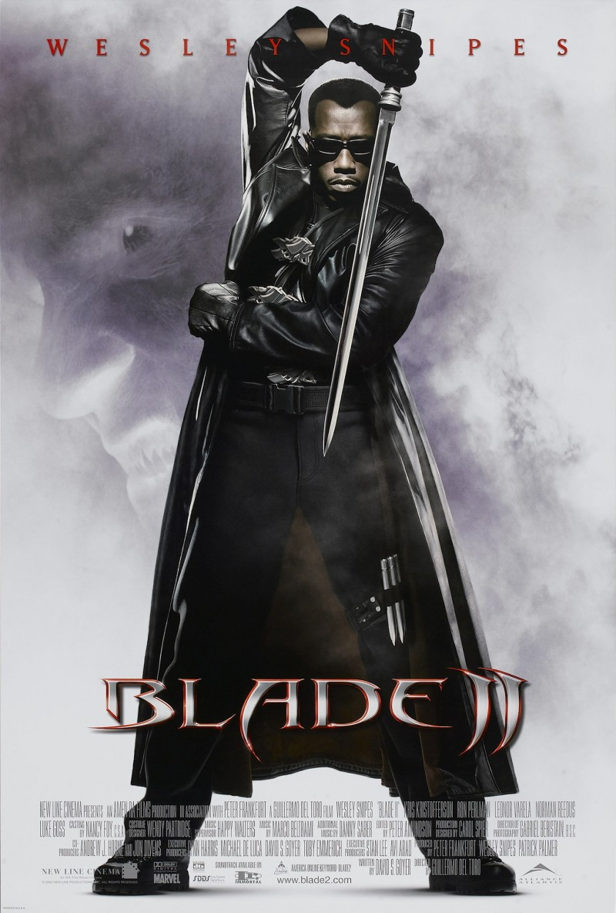
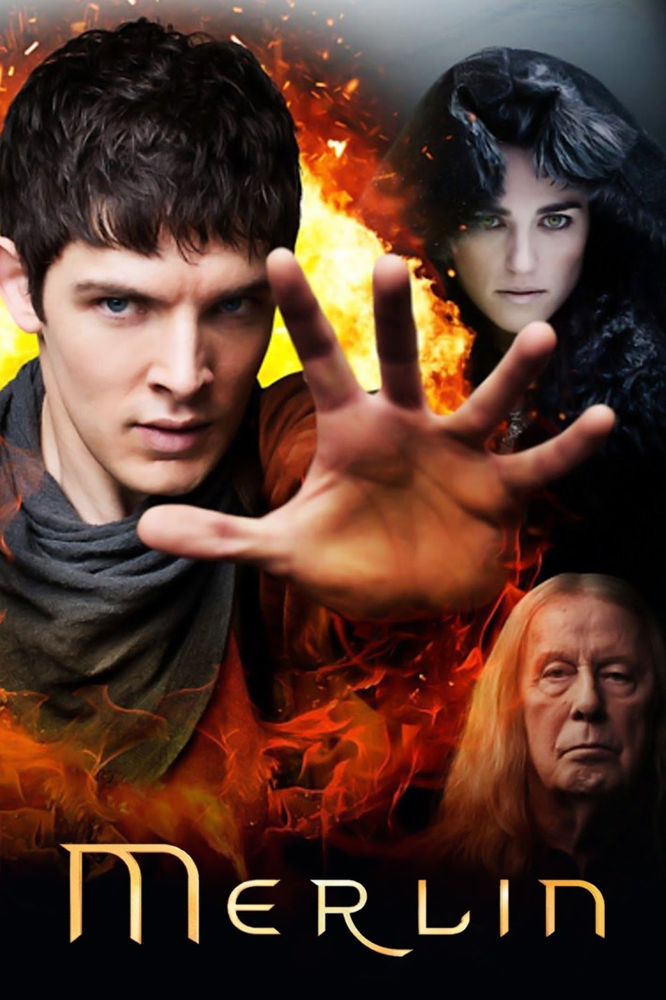
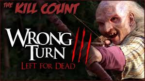
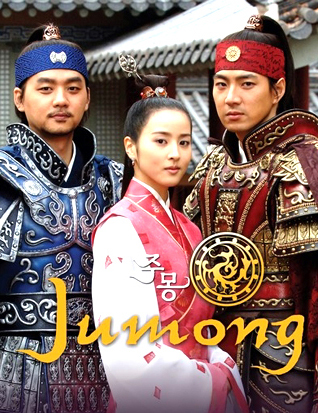
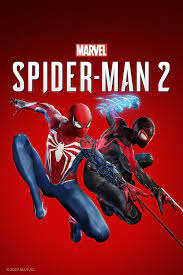

Blade is one of my best movies so far, he is immune to the bites of typical, supernatural vampires. I remembered when he has been bitten by Morbius, the Living Vampire, his physical powers increased. He became a dhampir, a human with many of the powers of a vampire with none of their weaknesses.
I recommend you watch this movie if you have not.
Merlin was famous for his shapeshifting powers and his guidance of a young Arthur into the powerful king he was destined to be. Merlin was a powerful yet altruistic character in Arthurian legend, who counseled and advised the creation of the Knights of the Round
Please watch
Hmmmmm, this is really a horror movie and i recomment this for you to watch. They were searching for help in the cabin belonging to the three monstrous mountain men, they are hunted down one by one. At the end, Chris and Jessie Burlingame (Eliza Dushku) survive.
Jumong is as good as it gets. The show is a loose dramatization of Korean history and the efforts of Jumong to unite the kingdom and then drive out invaders. The character development here is truly awesome with about 20 significant characters that the viewer will come to know very well indeed.
Peter Parker's gifts from the spider bite include enhanced strength, stamina, and agility, as well as the ability to cling to nearly any surface by his hands and feet, and an internal “alarm” of sorts that warns him of impending danger.
